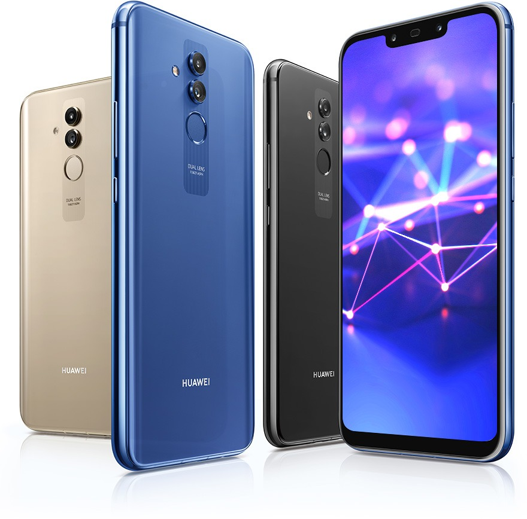
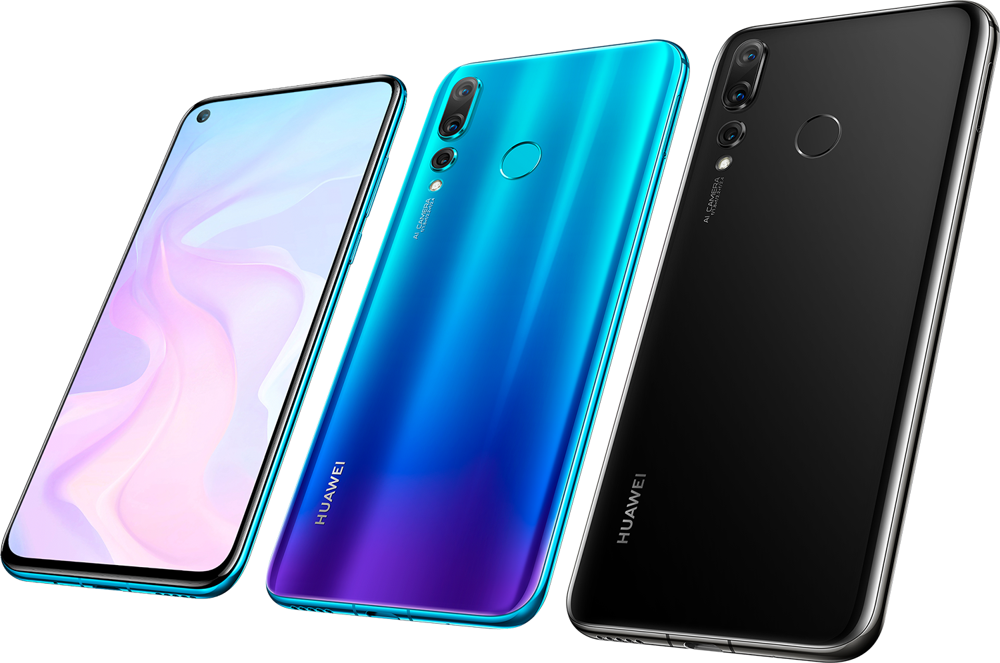
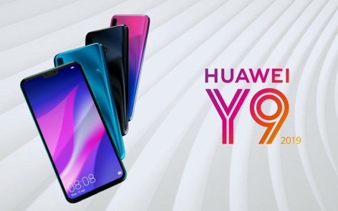

Tecnologia Celular
Huawei
Huawei Technologies Co., Ltd. (chino: 华为技术公司, pinyin: Huáwèi jìshù gōngsī) es una empresa privada multinacional china de alta tecnología especializada en investigación y desarrollo (I+D), producción electrónica y marketing de equipamiento de comunicaciones. Además, provee soluciones de redes personalizadas para operadores de la industria de telecomunicaciones.

Huawei Technologies ha sido incluida en la lista de compañías más respetadas, ésta lista ha sido realizada por "The Reputation Institute" y publicada por la revista Forbes, Estados Unidos en mayo de 2007. La lista de las compañías más respetadas cubre varias industrias como productos de consumo masivo, eléctricos y electrónicos, automotrices, venta minorista, farmacéuticas, computadores, financieras, aeroespaciales, telecomunicaciones, etc.

Huawei provee redes de telefonía fijas y móviles, comunicaciones de datos, redes ópticas, software & servicios y terminales telefónicos, incluyendo módems --- conmutadores, redes de acceso integradas, NGN, xDSL, transporte óptico, redes inteligentes, GSM, GPRS, EDGE, W-CDMA, CDMA2000, una serie completa de routers y conmutadores IP, videoconferencia y equipamiento a otros campos clave de la tecnología de telecomunicaciones. Huawei fabrica también teléfonos móviles (e.j., Huawei provee a Vodafone con teléfonos móviles 3G de marca exclusiva Vodafone,26 como el Vodafone 710), 3G HSDPA tarjetas (Huawei E62027 La tarjeta HSDPA está siendo ofrecida por operadores como Vodafone en el Reino Unido y Telia en Suecia) y su módem 3G HSDPA USB, Huawei E220 (también vendido por Vodafone como Vodafone Mobile Connect USB Modem)
